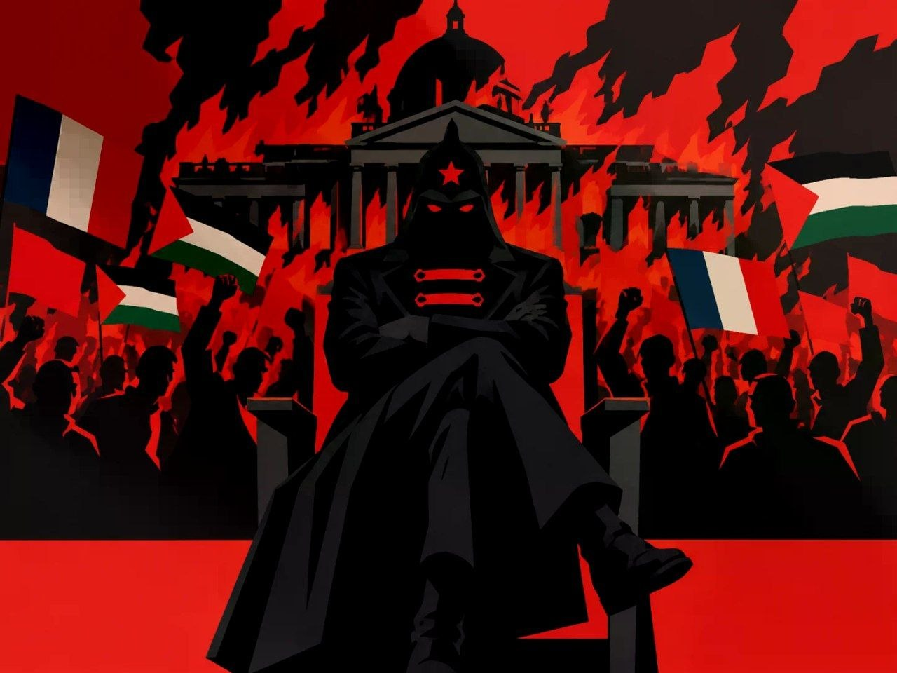

Вся власть Советам
Антиавторитарный советский социализм и марксистская демократия
«Призрак бродит по Европе — призрак коммунизма.» К. Маркс и Ф. Энгельс, «Манифест Коммунистической партии», 1848

Призрак — не вождь и не памятник. Это идея, которая возвращается, когда власть забывает о тех, кого представляет.
Позиция
Я, Г. Е. Ухватов, автор проекта. Я не состою ни в одной из действующих «коммунистических» партий и критикую все авторитарные ответвления марксизма. Моя цель — теория социализма без бюрократии и культа вождей, которая принадлежит трудящимся.
Антиавторитаризм
Против диктатуры буржуазии и против диктатуры партийной номенклатуры. Власть — рабочему самоуправлению и Советам.
Интернационализм
Русский и украинский, американский и китайский рабочий — один класс. Границы нужны капиталу, чтобы стравливать нас.
Антимилитаризм
Против любой империалистической войны под любым флагом: в Украине, на Ближнем Востоке и где бы то ни было.
Марксистская демократия
Это не либеральная демократия, где рабочий выбирает только хозяина, и не диктатура партии. Власть принадлежит тем, кто создаёт материальные блага, и строится на Советах трудящихся. Шесть принципов:
Выборность снизу доверху
Делегаты всех уровней избираются на собраниях трудовых коллективов. Никаких назначенцев сверху и партийных списков; выдвинуть может любой трудящийся.
Императивный мандат и право отзыва
Делегат голосует по наказу избирателей, а не по своему усмотрению. Собрание коллектива, который его делегировал, может отозвать его в любой момент.
Ротация и отсутствие привилегий
Делегаты не профессиональные политики: они работают на производстве и получают лишь компенсацию потерянного времени. Срок полномочий — 2–3 года, подряд не более двух раз. Так не складывается каста управленцев.
Свобода фракций
Дискуссии, фракции и критика большинства меньшинством допустимы внутри Советов и партии. Запрет фракций на X съезде РКП(б) в 1921 году стал шагом к диктатуре аппарата.
Единство властей без бюрократического произвола
Советы объединяют законодательную, исполнительную и контрольную функции. Исполкомы подотчётны Советам, судьи избираются ими, милиция работает под контролем рабочих коллективов.
Народный контроль
Выборные контролёры от трудовых коллективов проверяют учреждения, суды и милицию. Без этого Советы становятся декорацией.
Как устроена власть снизу вверх
Нажмите на уровень, чтобы увидеть, что он решает и кого делегирует выше.
Что мы отвергаем
Социализму не нужны вожди. Пьедестал остаётся пустым: решает коллектив, а не одна фигура.
Культ личности
Никаких «вождей» и «отцов народов». Нужно коллективное руководство и личная ответственность.
Государственный капитализм
Если рабочие остаются наёмными, а управляют чиновники, это новая форма эксплуатации, а не социализм.
Подавление Советов
Если реальная власть у партийных комитетов, Советы — декорация, а социализм — фикция.
Великодержавный шовинизм
Имперский национализм под красным флагом не лучше любого другого. Нации вправе на самоопределение вплоть до отделения.
Репрессии как метод
ГУЛАГ, внесудебные расправы и «враги народа» — карикатура на социализм. Нужны выборные суды и запрет политического террора.
«Партия решает всё»
Роль партии — теория, агитация, координация. Приказывать Советам она не вправе.
Что читать
- В. И. Ленин, «Государство и революция»Идея государства-коммуны, выборности и отзыва, отмирания бюрократии (1917).
- Р. Люксембург, «О русской революции»Критика ограничения свободы и демократии при диктатуре пролетариата.
- А. Коллонтай, «Рабочая оппозиция»Требование управления производством профсоюзами и рабочими (1921).
- П. Кропоткин, «Речи бунтовщика»Анархистская критика государства и идея свободной федерации общин.
- К. Маркс, «Гражданская война во Франции»Парижская коммуна как прообраз власти трудящихся.
Новости пролетариата
События и сводки с классовых позиций — в Telegram
Лента на сайте пока пуста, но каналы обновляются регулярно.
Открыть @PrisrakNewsКонтакты
Все каналы ведутся лично автором. Вопросы и предложения — в Telegram.